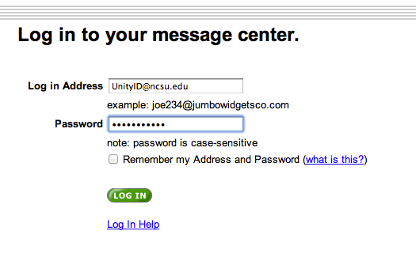

Friday Institute Support FAQ
Setup to Print to Bizhubc360 Printers.
1) Click on the Start Button in the lower left corner
2) Select the "Devices and Printers" menu on the right side of the Start menu.

3) Right click on your desired Konica Minolta Bizhubc360 Printer.
4) Left click on "Printing preferences" in the menu that pops up.
5) Left click on the "Basic" tab in the window that pops up.
6)
Friday Institute Support FAQ
Friday Institute Support FAQ
Problems with emails going to spam
Please select deisred button for you email account type.
Friday Institute Support FAQ
Disable the use of Postini
1) Log into your postini account at junkmail.ncsu.edu

2) Once there, press the My Settings button in the right corner.

3) Next press the Manage Junk Filters link in the Junk Settings.
4) A new page will open. On the left side of the page will be a Junk Email Blocking area.

5) Press the ACTIVATED button that is in green. It will then change to red and say DEACTIVATED. Then press Save Settings.
6) You are now free to logout and Postini will be disabled.
Friday Institute Support FAQ
Set up a filter to catch emails from fridayinstitute@ncsu.edu
1) Log into your postini account at junkmail.ncsu.edu
2) Once there, press the My Settings button in the right corner.
3) Next press the Approve Senders link in the Junk Settings.
4) A new page will open. On the left side of the page will be an Approved Senders area.
5) In the Approved senders area, type fridayinstitute@ncsu.edu and press Update Approved Senders.

6) You are now free to logout and all futher emails sent to fridayinstitute@ncsu.edu will go directly to your inbox.
Friday Institute Support FAQ
Set up a filter to catch emails from fridayinstitute@ncsu.edu
1) Log into your Gmail account at gmail.ncsu.edu
2) At the top right corner press the button that looks like a gear.
3) From the drop down menu, press the Settings button.
4) Once on the Settings Page, press the Filters tab.
5) At the bottom of the filters page, press the "Create Filter" button.
6) A small window will open up. In the from line, type fridayinstitute@ncsu.edu. Then press the "Create filter with this search" button.

7) A series of check bokes will appear. Check the "Never sent it to Spam" button as well as the "Also apply filter to # matching conversation".
8) Press the "Create filter" button and the filter will be created.

Friday Institute Support FAQ
Friday Institute Support FAQ
Connecting to data.fi.ncsu.edu from a PC
1. From Windows 7 click Start then Right Click on Computer to select Map Network Drive
2. In the Map Network Drive Window Select the drive letter (F: for example)
3. Type the mount path from the projects list, departments list, or your home folder. ie: \\data.fi.ncsu.edu\gismo
4. Select "Reconnect at login"
5. Click Connect using different credential then click Finish
6. Use the username: wolftech\<unityid> For example, user bmbouter would use the username wolftech\bmbouter
7. Type your UNITY password.
Friday Institute Support FAQ
data.fi.ncsu.edu URLs for Windows Computers
FI EVAL Team
\\data.fi.ncsu.edu\fi_eval_team
FI STEM Group
\\data.fi.ncsu.edu\fi_stem_group
GEES
\\data.fi.ncsu.edu\gees
GISMO
\\data.fi.ncsu.edu\gismo
LEONARDO
\\data.fi.ncsu.edu\leonardo
LTBI
\\data.fi.ncsu.edu\ltbi
MINDSET
\\data.fi.ncsu.edu\mindset
MISO
\\data.fi.ncsu.edu\miso
New Learning Ecologies
\\data.fi.ncsu.edu\new_learning_ecologies
PTMT
\\data.fi.ncsu.edu\ptmt
VCLSU
\\data.fi.ncsu.edu\vclsu
Friday Institute Support FAQ
Connecting to the NCSU VPN on a Mac
1. Goto your Applications folder
2. Go into the "Cisco" folder
3. Double click the Cisco AnyConnect VPN Client Application
4. Where it says "Connect To:" use "vpn.ncsu.edu"
5. Enter your UNITY username and password and click "Connect"
6. If you receive no errors then you are connected
Friday Institute Support FAQ
Connecting to the NCSU VPN on a PC
1. Start > Programs > Cisco Systems VPN Client > VPN Client.
2. Where it says "Connect To:" use "vpn.ncsu.edu"
3. Enter your UNITY username and password and click "Connect"
4. If you receive no errors then you are connected
Friday Institute Support FAQ
Connecting to data.fi.ncsu.edu from Off Campus
Have you connected to the NCSU VPN yet?
Friday Institute Support FAQ
E-mail Mustapha
1. Ask him to install the NCSU VPN on your computer.
2. Ask him to teach you to connect to NCSU using the VPN.
Friday Institute Support FAQ
Department Mount Paths for Windows Computers
BUSINESSOFFICE
\\data.fi.ncsu.edu\businessoffice
BUSINESS_OFFICE_CUSTOMERS
\\data.fi.ncsu.edu\business_office_customers
COMMUNICATIONS
\\data.fi.ncsu.edu\communications
DIRECTORS
\\data.fi.ncsu.edu\directors
EVENTS
\\data.fi.ncsu.edu\events
HR
\\data.fi.ncsu.edu\hr
IT
\\data.fi.ncsu.edu\it
OPERATIONS
\\data.fi.ncsu.edu\operations
OUTREACH
\\data.fi.ncsu.edu\outreach
RECEPTION
\\data.fi.ncsu.edu\reception
Friday Institute Support FAQ
Project Mount Paths for Windows Computers
1 TO 1COLLABORATIVE
\\data.fi.ncsu.edu\1to1collaborative
AIM
\\data.fi.ncsu.edu\aim
CRYSTALISLAND
\\data.fi.ncsu.edu\crystalisland
ENRICH
\\data.fi.ncsu.edu\enrich
EPIC_ED
\\data.fi.ncsu.edu\epic_ed
FI EVAL Team
\\data.fi.ncsu.edu\fi_eval_team
FI STEM Group
\\data.fi.ncsu.edu\fi_stem_group
GEES
\\data.fi.ncsu.edu\gees
GISMO
\\data.fi.ncsu.edu\gismo
IRB
\\data.fi.ncsu.edu\irb
LEONARDO
\\data.fi.ncsu.edu\leonardo
LTBI
\\data.fi.ncsu.edu\ltbi
METAANALYSIS
\\data.fi.ncsu.edu\metaanalysis
MINDSET
\\data.fi.ncsu.edu\mindset
MISO
\\data.fi.ncsu.edu\miso
NARRATIVETHEATRE
\\data.fi.ncsu.edu\narrativetheatre
NCIM
\\data.fi.ncsu.edu\ncim
NELA
\\data.fi.ncsu.edu\nela
New Learning Ecologies
\\data.fi.ncsu.edu\new_learning_ecologies
NOYCE_EVAL
\\data.fi.ncsu.edu\noyce_eval
OCOP
\\data.fi.ncsu.edu\ocop
PTMT
\\data.fi.ncsu.edu\ptmt
RTTT BACKGROUP DATA
\\data.fi.ncsu.edu\rtttbackgrounddata
RTTT DST
\\data.fi.ncsu.edu\rtttdst
RTTT PROPOSAL
\\data.fi.ncsu.edu\rtttproposal
VCLSU
\\data.fi.ncsu.edu\vclsu